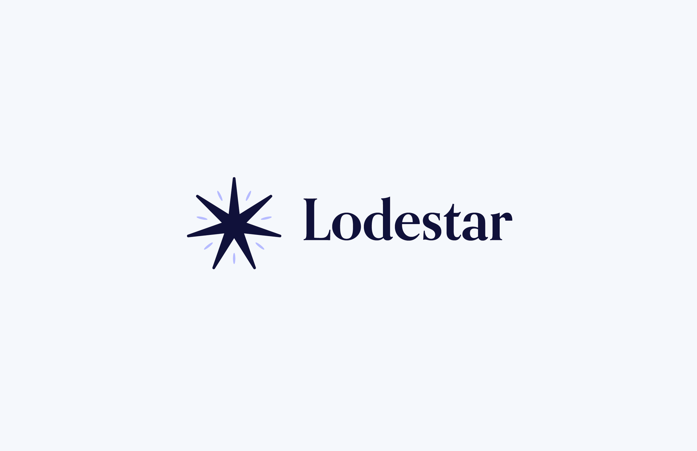
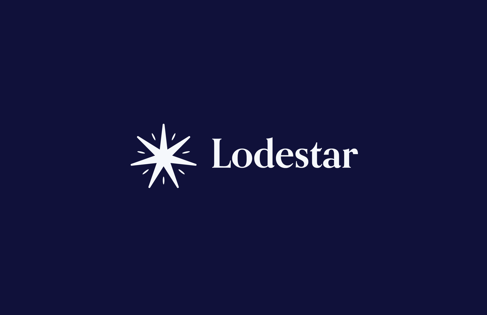
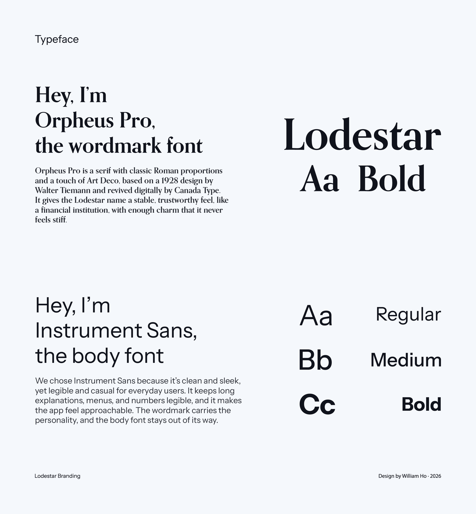
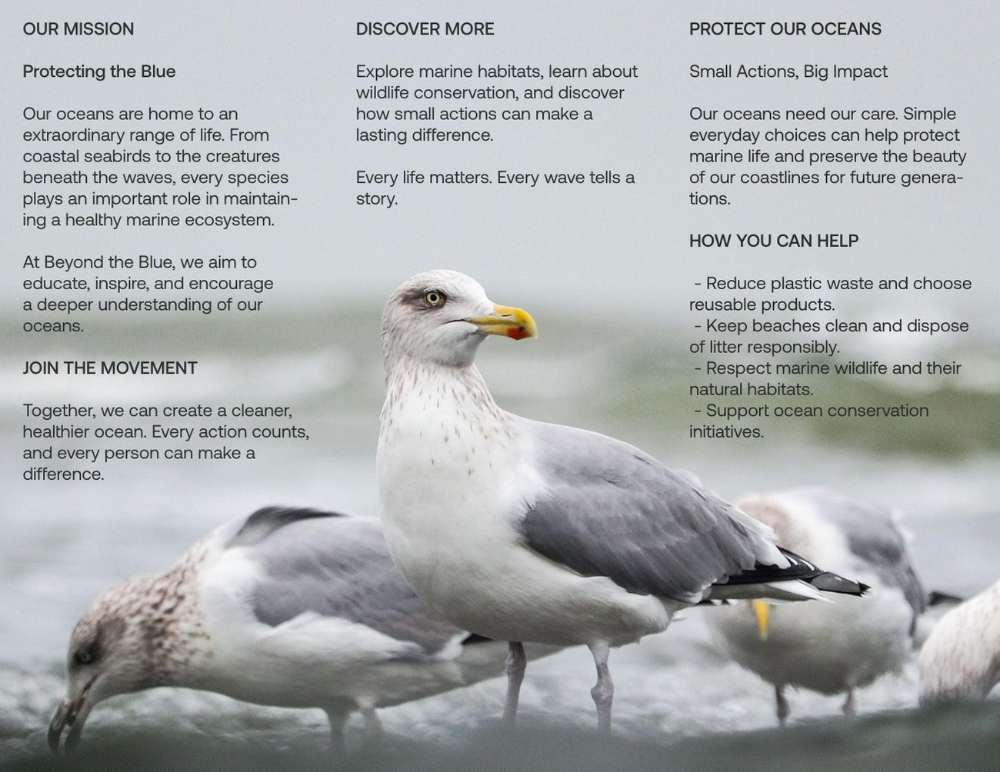

I’m William Ho. Graphic designer based in Brooklyn, NY, making brand identities, logos, and print design. Open to internships and freelance projects. Come on in and take a look around.
See the workAbout
I’m William Ho, a graphic designer in Brooklyn. I love designing engaging, visually appealing work that satisfies my clients. When I’m not designing you can find me playing video games.
Current
Student at Brooklyn College, BA in Art with a minor in Graphic Design (2024 to present)
Previous
Graphic Design & Web Development Intern, Infinity Hats & Ladders (2024 to 2025)
ForemanLogo and app icon
Foreman is an AI-powered OSHA recordkeeping platform. I designed its logo, a bold F built from rounded blocks with a single orange dot, and tested it as an iOS app icon.
Foreman needed a logo fast, and there was no written brief. I worked from what the product does: helping safety managers keep accurate OSHA injury records.
Give a serious safety tool a mark that feels solid and trustworthy, and that still reads clearly as a small iOS app icon.
A bold F built from rounded blocks, followed by a single orange dot. The rounded blocks keep the F sturdy without feeling harsh, and the dot adds one point of energy, like a full stop at the end of a record.
Orange and near-black on off-white. I tested the dot in both orange and yellow and chose orange. Orange borrows from safety signage, and the near-black keeps it serious. Yellow felt more like a warning.
A simple mark that holds up as an iOS app icon, shown on the home screen in the cover image. Of the options I explored, this was the one chosen.
A trifold brochure for Beyond the Blue Marine Discovery Center, a fictional marine discovery center. The cover uses a dark, textured ocean photograph with light type and a small gold ring. Inside, one wide seagull photograph runs behind three text columns on the mission, ways to explore, and how to help. The outside panels hold ticket options and contact details.



A poster for “Street Studies — No. 01.” The large “JAPAN” lettering is cut out of a pale blue textured field, so the street photograph shows through the letters. Map coordinates sit in the top corners, and the photographer and location are credited in small type. Photo by Sanga, as credited on the poster. Made as an exercise in visual creativity.